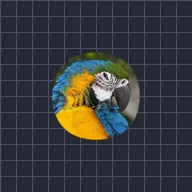

Gladde randen

Rondt de randen van de ondoorzichtige delen van de laag af en maakt ze glad, zonder de kleuren binnenin te veranderen. Maskeren op laag laat de randen alleen naar binnen bewegen.
Instellingen
| Instelling | Type | Bereik | Standaard |
|---|---|---|---|
| Sterkte | Getal | 0 px tot 300 px | 12 px |
| Maskeren op laag | Aan of uit | – | Uit |